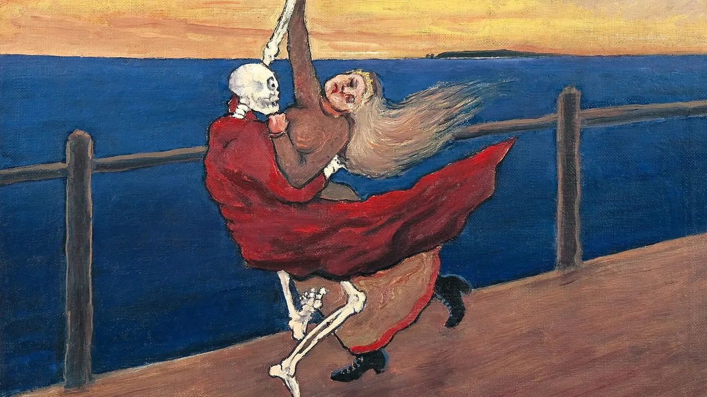

Today's Hours: 9am - 5pm
Featured Art:
Danse Macabre by Hugo Simberg
While the pandemic ravages the city, wealthy urbanites flee to a secluded estate to hide in comfort—whether it’s 1348 and we’re talking about the protagonists of Giovanni Boccaccio’s 14th-century masterpiece The Decameron, or it’s 2020 and we’re talking about the Manhattanites having their mail delivered to the Hamptons in limos. Credits: The Art of Making Art About a Plague, Jane Borden
About Us
At Macoll Museum, we believe in the power of storytelling through art, history, and culture. Nestled in the heart of Athens, our museum is a vibrant hub where the past meets the present, and where every artifact whispers tales of bygone eras.
Our Mission
Macoll Museum is dedicated to preserving, interpreting, and sharing the rich tapestry of human experience. Through our diverse collections and engaging exhibitions, we aim to inspire curiosity, spark imagination, and foster a deeper understanding of the world around us.
Discover Our Collections
Step into our galleries and embark on a journey through time and space. From ancient civilizations to contemporary masterpieces, our collections showcase a kaleidoscope of art, artifacts, and ephemera from across the globe. Whether you're fascinated by archaeology, enraptured by fine art, or intrigued by cultural heritage, there's something here to captivate every imagination.
Engage and Educate
At Macoll Museum, learning is an interactive adventure. Join us for guided tours, hands-on workshops, and thought-provoking lectures led by experts in their fields. Our educational programs are designed to ignite curiosity, stimulate critical thinking, and nurture a lifelong passion for discovery.
Community and Collaboration
We believe that museums are not just repositories of objects—they are living, breathing spaces that thrive on community engagement and collaboration. From outreach initiatives to collaborative exhibitions with local artists and cultural organizations, we are committed to forging connections and fostering a sense of belonging for all.
Plan Your Visit
Ready to embark on your own journey of discovery? Plan your visit to Macoll Museum today. Whether you're a seasoned scholar or a curious newcomer, we invite you to explore, learn, and be inspired by the wonders of the human story.